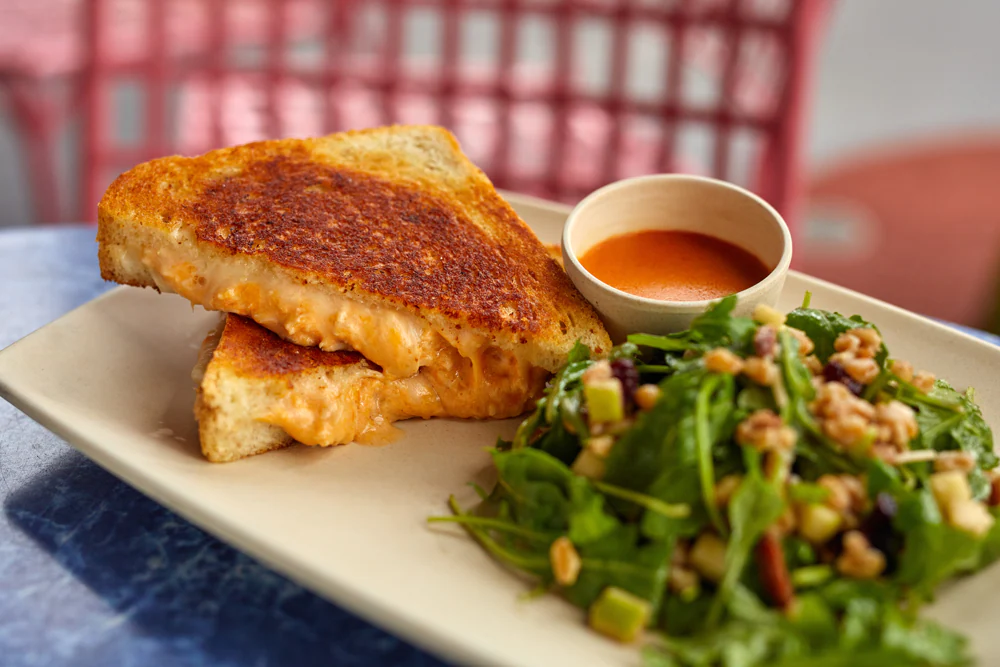

Buffalo Chicken Grilled Cheese Sandwich

Description
This buffalo chicken grilled cheese sandwich is the same
as the one that can be found at ABC Commissary at Disney's
Hollywood Studios theme park.
Ingredients
Buffalo Chicken Filling
- 1 cup whipped cream cheese
- 1 cup shredded Monterey Jack cheese
- 2/3 cup shredded cheddar cheese
- 1/2 cup buffalo hot sauce, plus more, to taste
- 2 cups shredded chicken
Buffalo Chicken Grilled Cheese Sandwich
- 8 large slices sourdough bread
- 8 slices non-smoked provolone cheese
- Buffalo chicken filling
- 8 tablespoons Boar's Head spicy chipotle mayonnaise
Required Cookware
- 12 inch skillet
- Large mixing bowl
- Kitchen mixer
- Spatula
Steps
- Combine cream cheese, Monterey jack cheese, and cheddar
cheese in a large bowl
- Stir until combined
- Add hot sauce and stir until uniformly distributed
- Add chicken and stir
- Optional: add additional buffalo sauce to taste
- Heat a large skillet over medium-low heat for 5 minutes
- Place 4 slices of sourdough bread on prep surface and
top each with one slice of provolone cheese
- Evenly divide buffalo chicken filling among the 4 sandwiches
- Top with remaining slices of provolone and bread
- Spread 1 tablespoon of mayonnaise on both sides of each
sandwich
- Cook on preheated skillet for 1-2 minutes per side,
until desired doneness
Note: Always use caution when handling sharp objects and hot
contents.